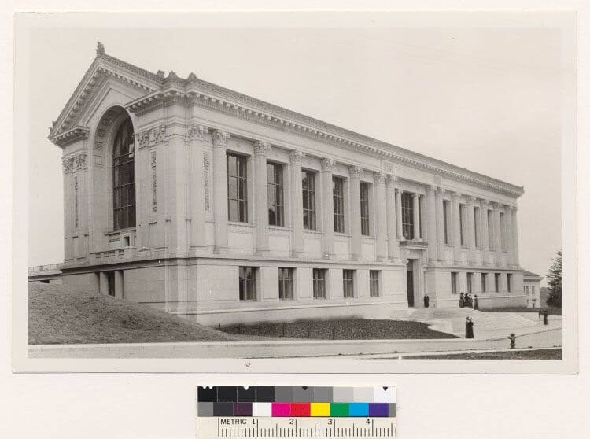
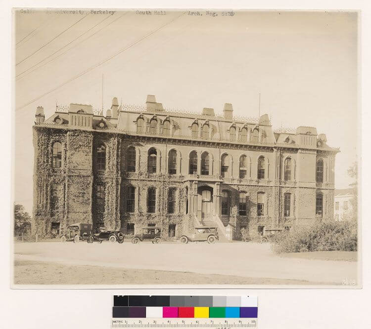

In 1912, the university came under intense pressure from the people of southern California to create a new, rival institution. To answer the calls, but without wanting to concede to creating a new university all together, the university’s president, Benjamin Ide Wheeler recruited Ira Woods Howerth from the University of Chicago to create a strong Extension presence in the southern parts of the state. It turned out that Howerth was even more of an idealist than Stephens and openly stated his vision for Extension to serve the people of the state in the ways they wanted and needed to be served, irrespective of University ideals. To achieve this objective, he designed a trailblazing organizational structure and implemented visionary new departments: Beyond the original class instruction, he revived the popular public lectures and added entertainment to them, he created departments for debate and public discussion as well as information and social welfare. To reach even more people, he pioneered correspondence instruction and allocated an entire department to it which served up to 5,500 students in 1917. Extension also began working with other institutions in offering classes to specific audiences whose need for education was particularly telling-for instance, the inmates at San Quentin and Folsom prisons. In 1915, Extension ventured into new forms of education and set up the Department of Visual Instruction to exploit the new motion picture technology for educational purposes. Howerth was an idealistic visionary clearly ahead of his time, and as such the university implemented regulatory bodies that govern Extension until today, including the Academic Senate Committees on Extension (1912) and Courses of Instruction (1913). In 1917 Extension began offering courses in Los Angeles a full two years before the university finally gave in to the calls of the public and in 1917 established its second campus, UCLA. By the time Howerth was let go from the university while serving in World War I in 1918, he had managed to establish Extension as the fundamental institution and model of the higher and continuing education it is today in California and around the world. At the end of the first world war, California experienced an economic boom accompanied by a dramatic increase of population, which meant that suddenly there was a greater need, and more money available, for education to offer its basic academic curriculum, Extension began providing vocational and training courses to thousands of veterans and to others eager to compete in new industrial markets.
In the 1920s, Professor Leon Richardson served as Director of Extension and reintroduced the ideals of Liberal Arts education into the educational standards and offerings, and recruited standard faculty again. His humanistic vision for Extension was that of ‘lifelong learning’, a term for which is widely credited, and which made Extension a national model and him a leading figure in Continuing Education. In 1923, in collaboration with the American Federation of Labor, Extension launched the Workers' Education Bureau of America, which offered courses in economics, public speaking, and labor problems and history. Despite the fact that many faculty were reluctant to lecture to ordinary adult learners, notably in mission-driven programs targeted at workers, Extension grew rapidly and by 1924, ranked second in the country in the number of continuing edu cation courses offered by an institution of higher education.
text